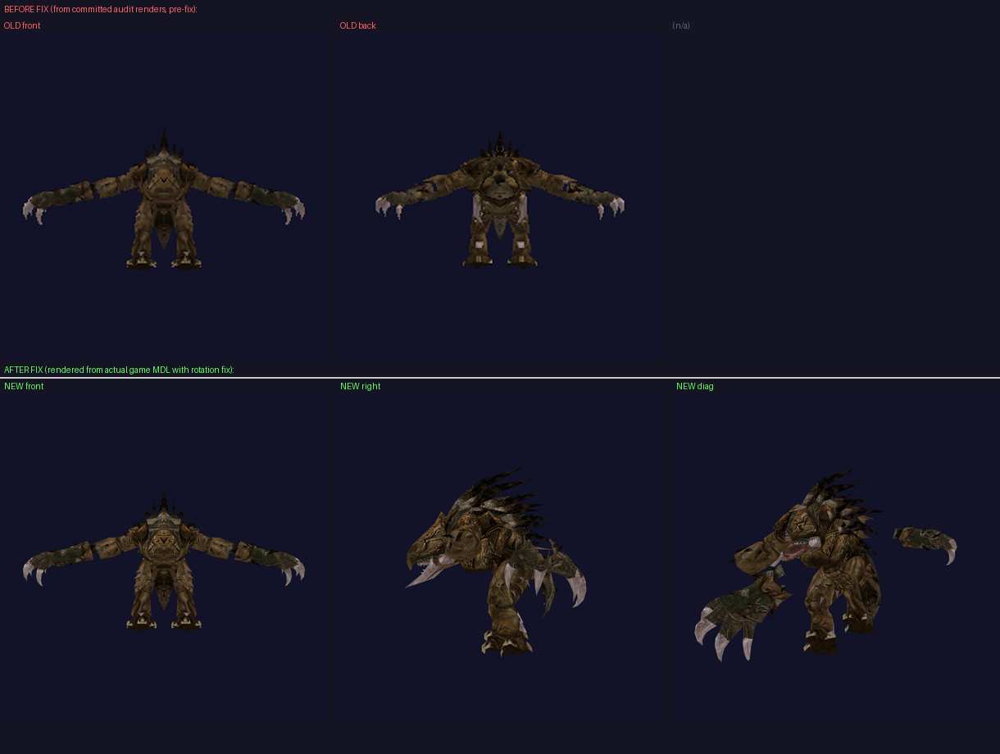
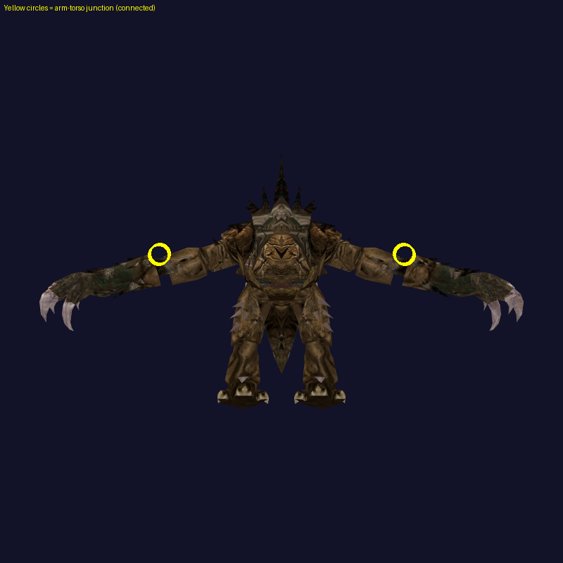
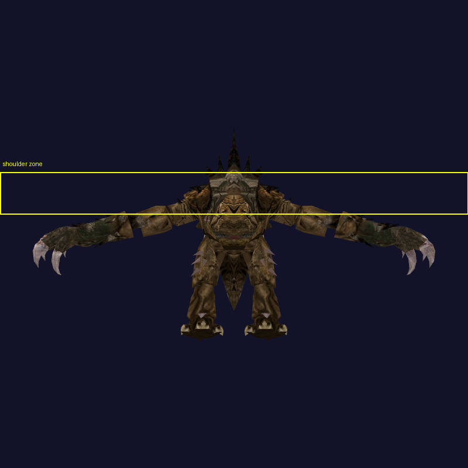

c_terantanak Arm Connection Fix — Visual Confirmation
Bug: c_terantanak Torso/feet/Tail skin nodes carry a ~180° Z rotation quaternion (0,0,1,0).
Pre-fix, this rotation was ignored, leaving those meshes Y-flipped → shoulder seam mismatch.
Fix: For standalone skin nodes with non-identity local rotation, apply only that node's own
local rotation (no translation) before rendering. This closes the Y-gap between Torso and RArm/LArm.
Side-by-Side Comparison

Full comparison (top=old/pre-fix, bottom=new/post-fix)
NEW Renders — After Fix (actual game files, c_terantanak01 texture)
Marked Junction Points

Yellow circles mark arm-torso junctions (connected)
Yellow box = shoulder zone
c_bantha (control — no rotation fix needed)